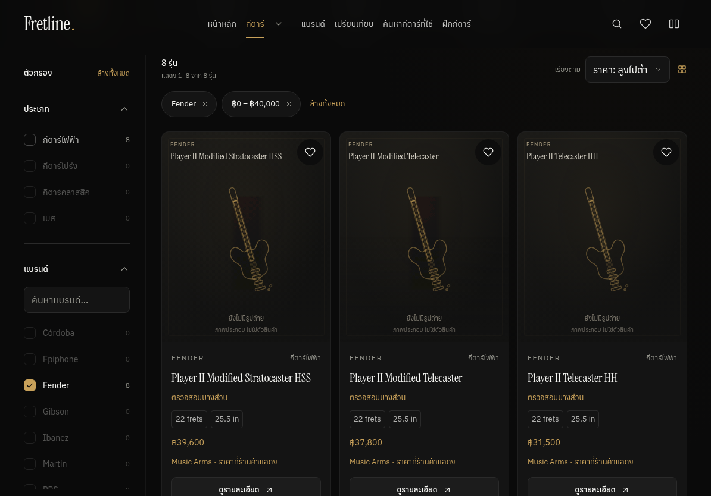
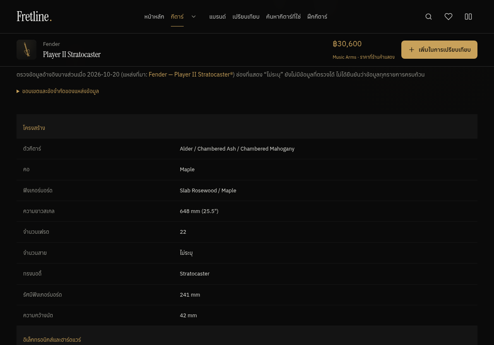
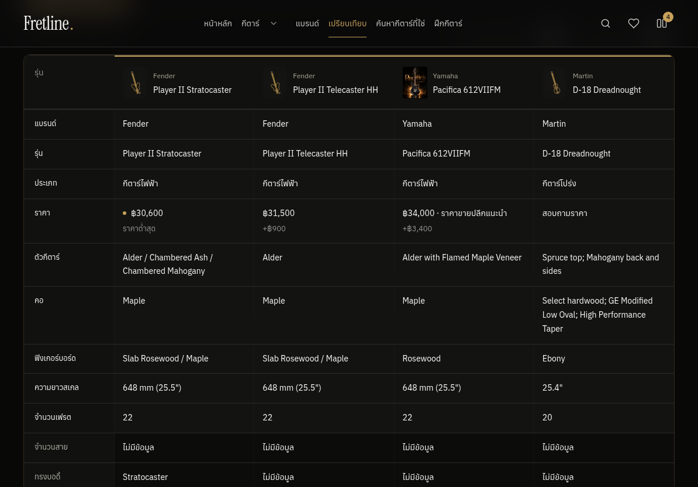
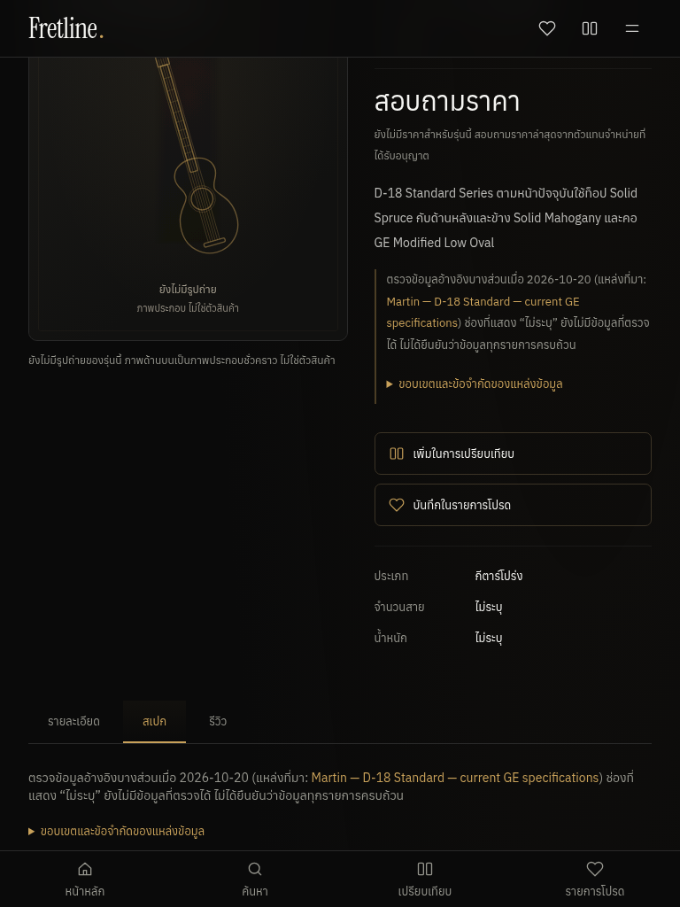
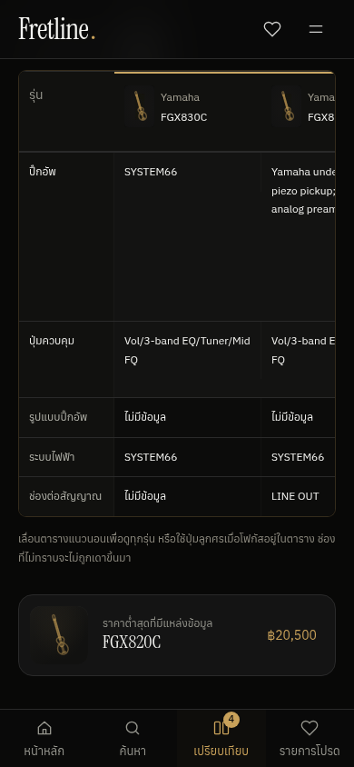
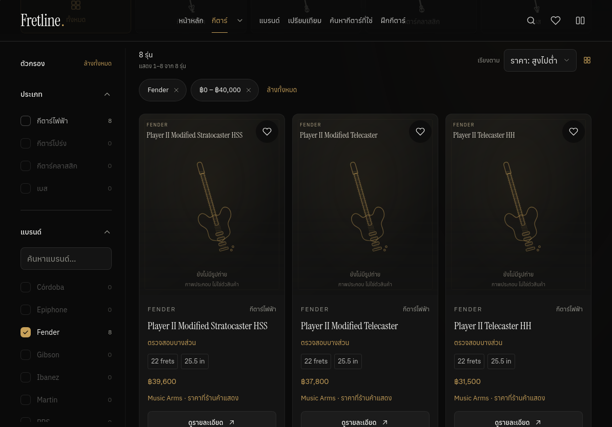
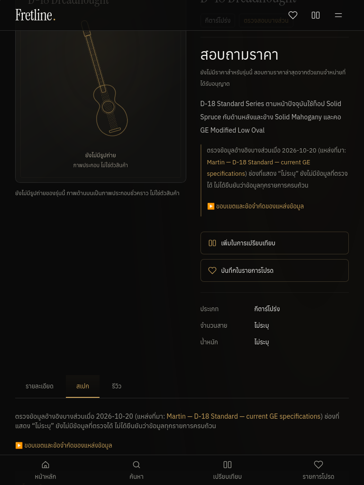
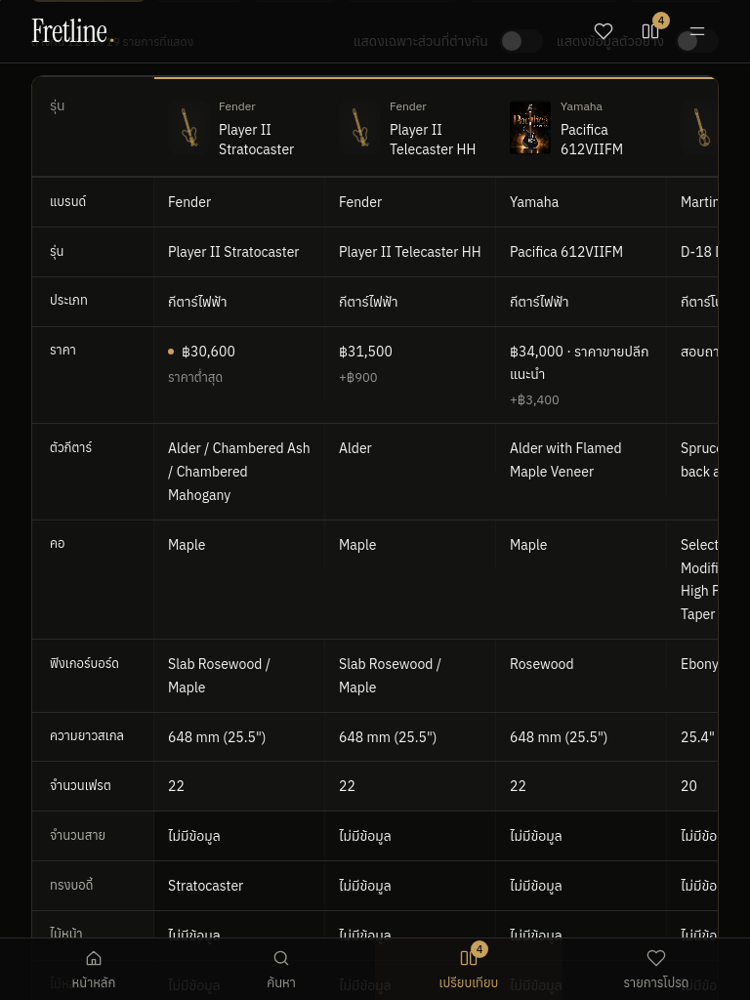
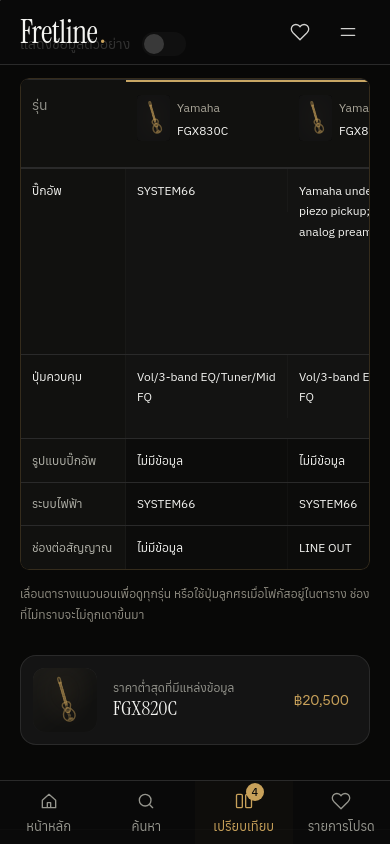

Actual production-browser screenshots
38/38 grouped checks passed. Four responsive sizes in Chromium and Linux WebKit; no physical iPad certification. All screenshots are pixel-identical lossless encodings of actual browser captures.
Browser report · Machine summary
browser-chromium/chromium-landscape-catalog-verified-prices.webp
browser-chromium/chromium-landscape-detail-new-specs.webp
browser-chromium/chromium-landscape-compare-prices.webp
browser-chromium/chromium-portrait-detail-unknown-price.webp
browser-chromium/chromium-portrait-compare-prices.webp
browser-chromium/chromium-mobile-compare-materials.webp
browser-webkit/webkit-landscape-catalog-verified-prices.webp
browser-webkit/webkit-landscape-detail-new-specs.webp
browser-webkit/webkit-landscape-compare-prices.webp
browser-webkit/webkit-portrait-detail-unknown-price.webp
browser-webkit/webkit-portrait-compare-prices.webp
browser-webkit/webkit-mobile-compare-materials.webp